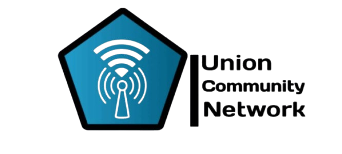
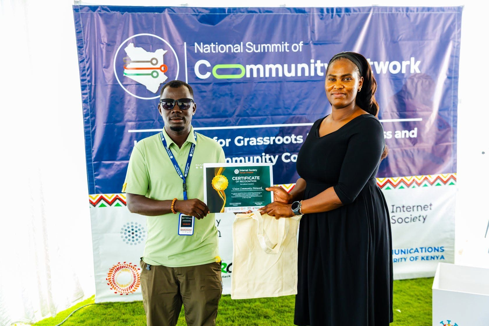

Youth Empowerment
Equipping young people with digital skills, life skills, and entrepreneurship training for self-reliance.


About UCN
Union Community Network is a grassroots community-based organization committed to unity, youth empowerment, digital inclusion, and resilient development in Kakuma and Kalobeyei.
Our Journey
A small group of community members came together with a shared vision of unity and mutual development. UCN began its journey with limited resources but unlimited determination.
After a decade of grassroots work, UCN achieved formal registration as a Community-Based Organization in Kenya. This milestone opened doors for partnerships, funding, and expanded programming.
UCN serves both host and refugee communities through internet provision, content creation, media training, life skills, peace building, entrepreneurship, digital literacy, computer programming, and psychosocial support.
Who We Are
UCN supports host and refugee communities in Kalobeyei and Kakuma through internet provision, media training, life skills, peace building, entrepreneurship, digital literacy, computer programming, and psychosocial support. Our motto, "Strive to Excel", reflects a commitment to growth, discipline, and positive community transformation.
To create a new generation of independent youths, reduce crime rates, promote education, and provide sustainable pathways toward opportunity and dignity.
Equipping young people with digital skills, life skills, and entrepreneurship training for self-reliance.
Providing internet access and digital literacy to bridge the technology gap in refugee and host communities.
Building bridges between host and refugee communities through dialogue, shared activities, and peace building.
Providing counseling and mental health support to vulnerable individuals and families in the community.
Institutional Profile
To ensure that no youth is left behind as far as technology is concerned.
To create a new generation of independent youths while providing digital skills and reducing crime rates in the community.
UCN was established in 2016 as a self-help group and registered in 2026. The organization's work includes internet provision, content creation, media training, life skills, peace building, entrepreneurship, computer programming, and support for orphans, widows, persons with disabilities, and learners.
Members must be at least 18 years old, willing to abide by the constitution, introduced by an active member, and committed to contributing the required registration fee and monthly dues.
The Executive Committee is the topmost governing body of the organization. It is composed of the Chairperson, Vice-Chairperson, Secretary, Assistant Secretary, Treasurer, and Time Keeper, all elected by members for a three-year term, renewable as appropriate.
Union Community Network is a recognized Community-Based Organization (CBO) operating in Kenya and committed to empowering youth, promoting community development, and supporting vulnerable populations.
Leadership

Providing strategic leadership and guiding the organization's vision for community development and youth empowerment.

Supporting governance and ensuring effective coordination of programs across host and refugee communities.

Managing organizational records, communications, and administrative functions to keep UCN running smoothly.

Assisting with documentation, member coordination, and supporting the secretariat in daily operations.

Overseeing financial management, budgeting, and ensuring transparent use of organizational resources.

Contributing to program planning and community outreach across UCN's areas of intervention.

Supporting program implementation and community engagement initiatives for youth and women.
Collaborating Agencies
Knowledge integration and inclusive development partnerships.
Community engagement and cultural exchange initiatives.
Media and storytelling for community awareness and change.
Refugee support and community-based protection programs.
Digital inclusion, connectivity, and internet access initiatives.
Education and youth empowerment through global partnerships.
Finn Church Aid — supporting quality education and livelihoods.
Grassroots inclusion and volunteer-driven development support.
Why UCN
Founded by community members for the community. We understand local challenges because we live them every day.
We serve both host and refugee communities, building unity across social divides in Kakuma and Kalobeyei.
From internet provision to computer programming, we leverage technology as a tool for empowerment and opportunity.
We address multiple dimensions of need — skills training, psychosocial support, peace building, and economic empowerment.
Join the Work